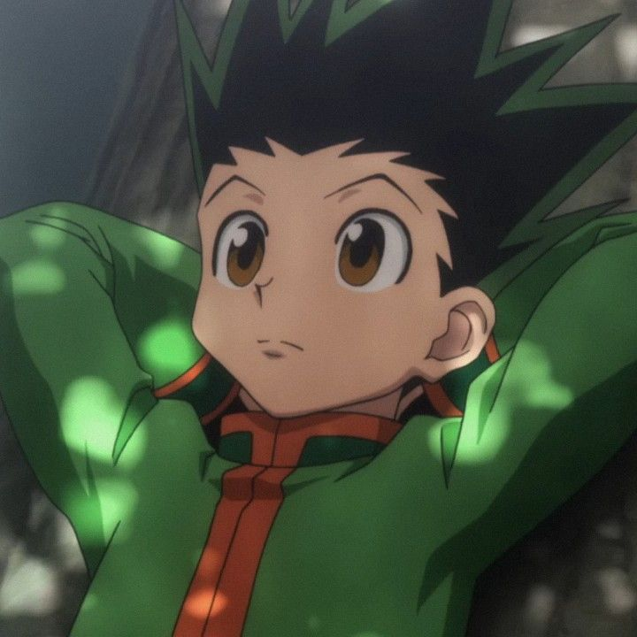
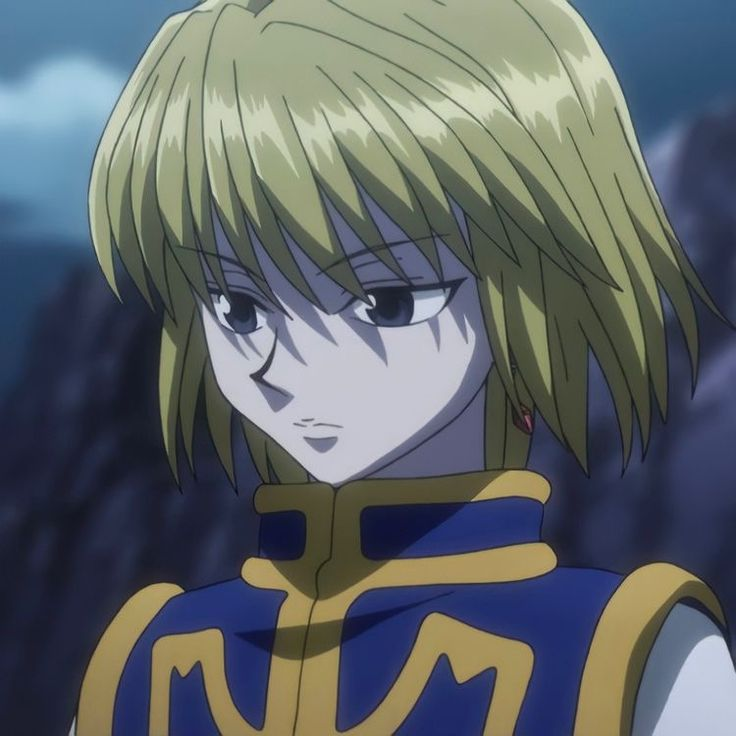
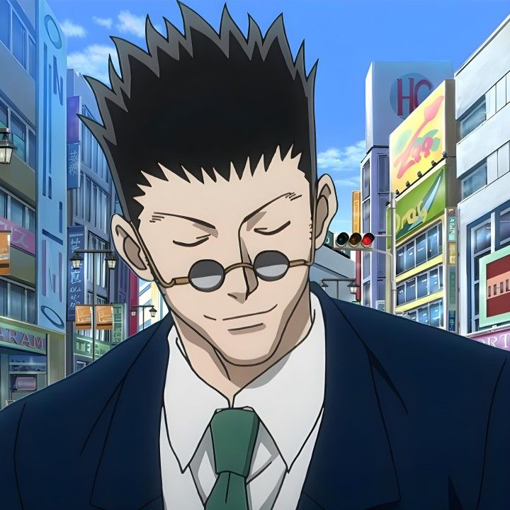
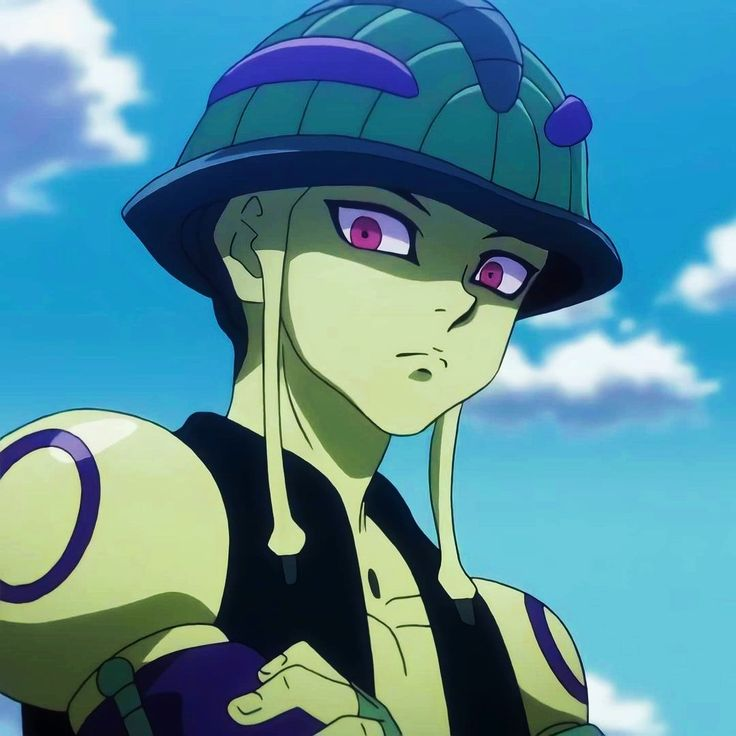
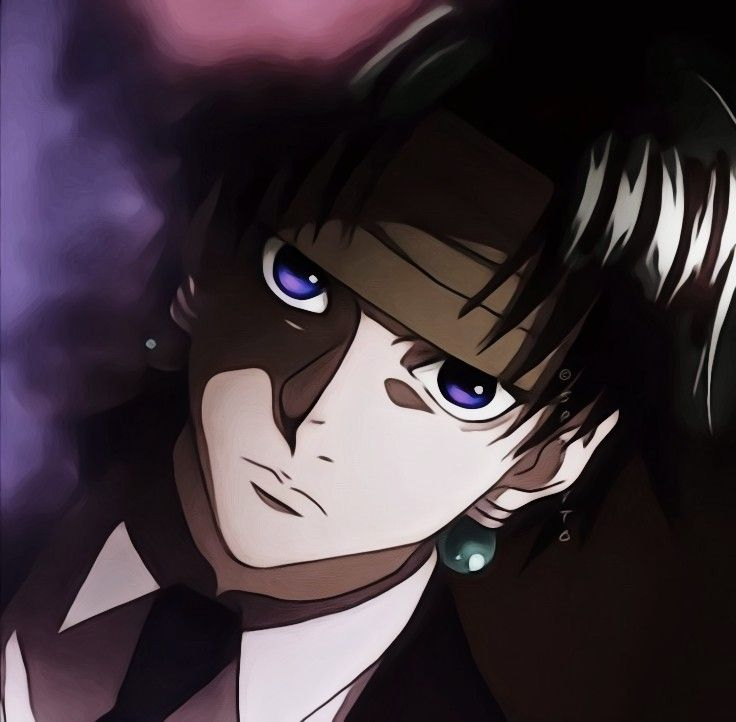

-
GON
Descrição
Gon Freecss é conhecido por sua determinação inabalável e otimismo contagiante, acreditando firmemente que qualquer desafio pode ser superado com coragem e esforço. Ele se recusa a desistir de seus objetivos, mesmo quando enfrenta adversidades aparentemente insuperáveis, sempre mantendo a esperança e a confiança em si mesmo. Seu estilo de luta é instintivo e feroz, valorizando acima de tudo a sinceridade e a força de vontade em cada batalha.
-
KILLUA

Descrição
Killua Zoldyck é conhecido por sua inteligência afiada e habilidade excepcional em combate, características herdadas de sua família de assassinos de elite. Apesar de seu passado sombrio, ele demonstra um coração gentil e uma lealdade profunda aos seus amigos, especialmente a Gon. Killua prefere estratégias calculadas e movimentos rápidos, valorizando acima de tudo a liberdade e a independência em suas ações. Sua aparente frieza esconde uma dedicação intensa àqueles que ama, tornando-o um aliado formidável e um amigo insubstituível.
-
Kurapika
Descrição
Kurapika Kurta é conhecido por sua determinação inabalável e seu compromisso inabalável com a vingança contra a Tropa Fantasma, o grupo responsável pela massacre de seu clã Kurta. Sua mente é afiada como uma lâmina, habilmente calculando cada movimento em sua busca por justiça. Apesar de sua busca implacável por vingança, Kurapika mantém um senso de honra e compaixão, especialmente em relação aos amigos que encontra ao longo de sua jornada. Sua especialidade em usar Nen, especialmente a corrente escarlate, demonstra sua habilidade excepcional e sua determinação em alcançar seus objetivos, mesmo que isso signifique enfrentar perigos mortais.
-
Leorio
Descrição
Leorio Paradinight é conhecido por sua natureza extrovertida e sua paixão pela medicina. Enquanto muitos o subestimam por sua aparência desleixada e comportamento brincalhão, Leorio é incrivelmente inteligente e dedicado ao seu objetivo de se tornar um médico renomado. Sua motivação para se tornar um Hunter é principalmente financeira, mas ao longo de sua jornada, ele desenvolve um senso profundo de justiça e desejo de ajudar os outros. Leorio valoriza a honestidade e a integridade, e embora possa parecer descuidado às vezes, ele está sempre pronto para defender o que acredita ser certo. Sua amizade e lealdade para com Gon, Killua e Kurapika são inegáveis, e ele se torna uma parte essencial da equipe durante suas aventuras.
-
Meruem
Descrição
Meruem é conhecido por sua incrível força e inteligência sobrenaturais como o Rei das Formigas Quimera. Sua busca inicial é puramente dominar e estender seu poder sobre todos que o cercam. No entanto, ao longo de sua jornada, ele começa a desenvolver uma compreensão mais profunda da humanidade e suas complexidades. Apesar de sua natureza inicialmente fria e calculista, Meruem começa a demonstrar compaixão e até mesmo amor, especialmente em relação à sua guardiã Komugi. Sua transformação de uma criatura de pura ambição para alguém capaz de reconhecer a beleza e o valor na fragilidade humana é uma das histórias mais marcantes de "Hunter x Hunter". A jornada de Meruem é um exemplo de como até mesmo os seres mais poderosos podem ser transformados pela empatia e pelo entendimento mútuo.
-
Chrollo
Descrição
Chrollo Lucilfer é conhecido por sua personalidade misteriosa e carismática, liderando a infame Tropa Fantasma com uma mistura única de inteligência e habilidade em combate. Sua habilidade Nen, o "Nen da Marca", permite-lhe roubar habilidades de outros usuários de Nen, tornando-o um oponente formidável. Chrollo é um estrategista brilhante, capaz de antecipar os movimentos de seus adversários e manipular situações complexas em seu benefício. Sua lealdade à Tropa Fantasma é inquestionável, e ele está disposto a sacrificar qualquer coisa para proteger seus companheiros. Apesar de sua natureza às vezes cruel e implacável, Chrollo demonstra uma complexidade emocional, especialmente em relação à sua relação com seu mentor, Kuroro Lucifer, e seus objetivos mais profundos como líder da Tropa Fantasma. Sua presença imponente e sua habilidade excepcional tornam-no um dos personagens mais intrigantes e formidáveis de "Hunter x Hunter".